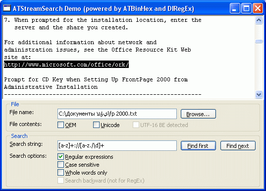

ATStreamSearch Component
ATStreamSearch is a Delphi/C++Builder
non-visual component which implements text searching functionality.
You set the FileName or Stream property and then call
FindFirst/FindNext methods to perform search with needed options.
Streams and files can be of unlimited size (Int64) - even for RegEx search!
Search options supported are:
- Case Sensitive
- Whole Words
- Backward Search (not for RegEx mode)
- RegEx (available only when DIRegEx library is used)
Text encodings currently supported are:
- ANSI
- OEM
- EBCDIC
- KOI8
- ISO
- Mac
- Unicode (UCS-2) LE and BE
- Plus many others

Screenshot of demo application